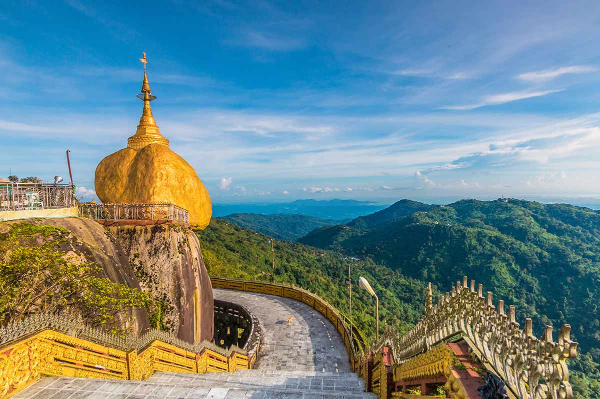
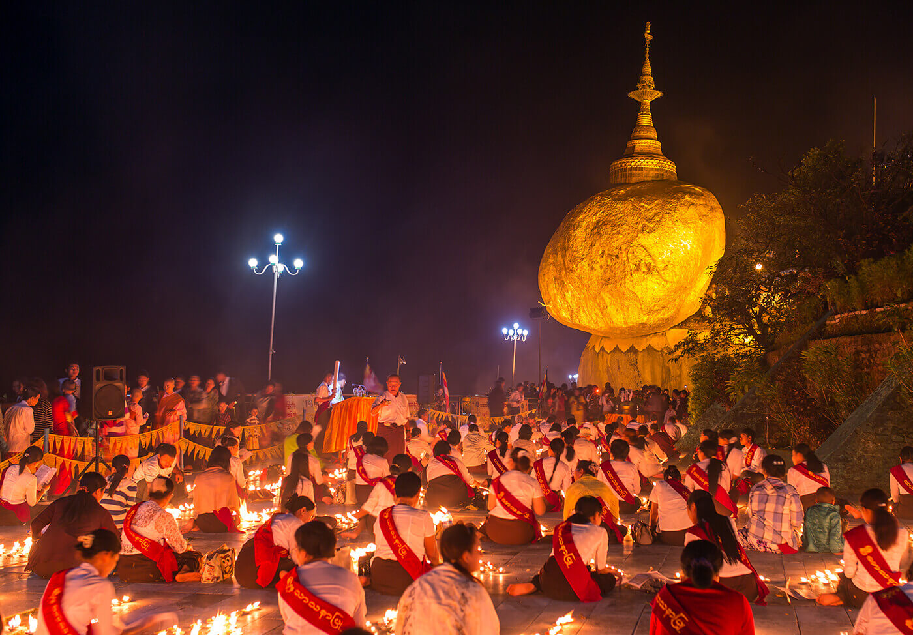
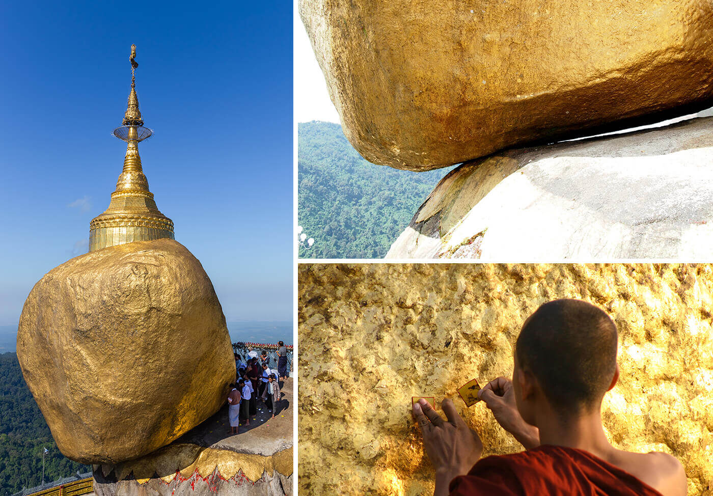
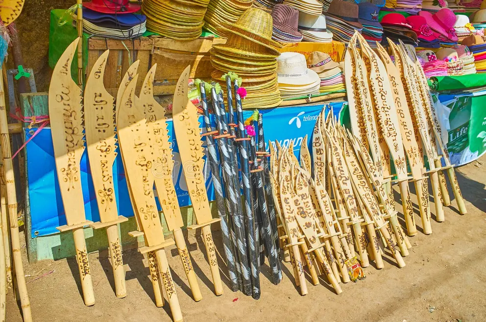
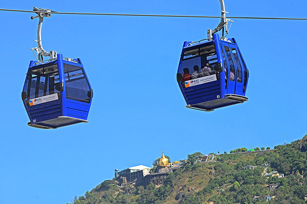

“Famous places in Myanmar that are also our favorites”


~Welcome to Our Golden Land~
Myanmar, officially the Republic of the Union of Myanmar and formerly known as Burma, is a country
located in Southeast Asia. It is the largest country by land area in Mainland Southeast Asia and has
a population of around 55 million people.
Myanmar shares borders with India and Bangladesh to the northwest, China to the northeast, and Laos
and Thailand to the east and southeast. To the south and southwest, it is bordered by the Andaman
Sea and the Bay of Bengal.
The capital city is Naypyidaw, while the largest and most populous city is Yangon. Myanmar is known
for its rich cultural heritage, ancient historical sites, thousands of Buddhist pagodas, and diverse
natural landscapes including mountains, rivers, and beaches.
The country offers a unique cultural experience shaped by its long history, traditional customs, and
religious traditions, making it one of the most culturally rich countries in the region. We hope you
enjoy learning about Myanmar through our website.
Our website primarily features Myanmar’s most iconic destinations, including the Shwedagon Pagoda in
Yangon, the sacred Kyaiktiyo Pagoda (Golden Rock), Inle Lake, and Ngapali Beach. In addition, we
also highlight a selection of other notable locations across the country to give visitors a broader
glimpse of Myanmar’s diverse beauty and cultural heritage.

Shwedagon Pagoda
Shwedagon Pagoda is the most famous and sacred Buddhist pagoda in Myanmar, located in Yangon. It stands on Singuttara Hill and can be seen from many parts of the city. The pagoda is believed to be over 2,500 years old, making it one of the oldest pagodas in the world. The main stupa is covered with real gold plates, with over 27 metric tonnes of gold leaf, giving it a brilliant golden shine, especially during sunrise and sunset. At the top of the pagoda, there is a crown called the “hti,” which is decorated with thousands of diamonds and precious gems. The most famous gem is a large diamond at the very top that sparkles beautifully in the sunlight. Shwedagon Pagoda is not only a religious place but also a sacred pilgrimage site and a cultural symbol of Myanmar. Many local people visit the pagoda every day to pray, meditate, and make offerings such as flowers, candles, and water. Visitors can also explore many smaller shrines around the main stupa, each representing different days of the week according to Myanmar astrology. The atmosphere of Shwedagon Pagoda is peaceful and spiritual. It is highly recommended to visit in the late afternoon or at sunset, when the light and colors on the pagoda become softer and more beautiful, making it ideal for photography. The weather is also cooler, and the surroundings feel more relaxing and lively. At night, the golden stupa is beautifully illuminated, creating a breathtaking and unforgettable view. It is one of the most important tourist attractions in Myanmar and a must-visit place for anyone who wants to experience the country’s culture and religion.
Kyaiktiyo Pagoda (Golden Rock)






Kyaiktiyo Pagoda, also known as the Golden Rock, is one of the most famous and sacred places in Myanmar. It is located in Mon State at the top of Mount Kyaiktiyo. The pagoda sits on a huge granite rock that looks like it is balancing right on the edge of a cliff. This amazing sight and its spiritual importance bring thousands of people there every year. People believe the rock stays in its place because of a sacred hair of the Buddha kept inside the pagoda. Legend says a hermit and a king placed the rock there more than 2,500 years ago, making it a symbol of deep faith. For centuries, people have come here to pray, meditate, and stick gold leaves onto the rock. According to local religious customs, only men can touch the rock to apply gold leaf, while women worship from nearby areas. The best time to visit is from November to February during the cool, dry season because the weather is nice and the mountain views are clear. This is also when the Kyaiktiyo Pagoda Festival happens. During the festival, the place is full of life with many pilgrims and beautiful candlelight ceremonies at night. Visiting Kyaiktiyo is a great way to see local culture and traditions. Since it is a very holy place, visitors should dress modestly and show respect. Before going home, many people buy souvenirs like small models of the Golden Rock, prayer beads, or handmade crafts to remember their trip. Overall, Kyaiktiyo Pagoda is a special place where nature and faith meet, giving everyone a truly memorable experience.
Inle Lake
Inle Lake is one of the most beautiful and unique destinations in Myanmar, located in the Shan State highlands. Surrounded by green hills and peaceful villages, the lake is famous for its calm waters, floating gardens, and the distinctive lifestyle of the Intha people who live on and around the lake. One of the most remarkable sights here is the traditional leg-rowing fishermen, who skillfully balance on one leg while rowing their boats with the other, creating a scene that has become a symbol of Inle Lake. Another fascinating feature is the stilt houses built over the water, where local families live in wooden homes raised on tall bamboo or teak posts. These houses are designed to adapt to the lake environment, protecting residents from flooding and allowing daily life to continue directly above the water. The best time to visit Inle Lake is during the cool and dry season from November to February, when the weather is pleasant and the scenery is at its best. Another popular time is during the Phaung Daw Oo Festival, usually held between September and October, when visitors can experience lively boat processions, traditional music, and local celebrations that reflect the rich culture of the region. Inle Lake is also well known for its unique local cuisine, which reflects the traditions of the Shan people. Visitors can enjoy dishes such as Shan noodles, Inle-style fish curry, and fresh vegetables grown in the lake’s floating gardens. The food is often simple, fresh, and full of natural flavors, making it a memorable part of the travel experience. The culture of Inle Lake is deeply connected to traditional crafts and local lifestyles. The area is famous for its handwoven textiles made from lotus fibers, silk, and cotton. The lotus weaving technique, in particular, is rare and highly valued, as it requires great skill and patience. Visitors can also observe traditional industries such as silverwork, cheroot (Myanmar cigar) making, and boat building, which have been passed down through generations. Before leaving Inle Lake, many travelers choose to buy local souvenirs that reflect the region’s identity. Popular items include lotus silk scarves, handwoven fabrics, traditional Shan bags, silver jewelry, and handmade crafts. These souvenirs are not only beautiful but also represent the cultural heritage of the Inle region. Overall, Inle Lake offers a peaceful and culturally rich experience where visitors can enjoy stunning natural scenery, unique traditions, and authentic local life. It is a place that leaves a lasting impression through its beauty, simplicity, and cultural depth.
Ngapali Beach
Ngapali Beach is widely regarded as the most beautiful beach in Myanmar, located along the Bay of Bengal in Rakhine State. Known for its long stretch of soft white sand, clear blue water, and swaying palm trees, Ngapali offers a peaceful and unspoiled tropical atmosphere. Unlike many crowded beaches in other countries, it remains quiet and relaxing, making it an ideal destination for travelers who want to enjoy nature, fresh sea air, and stunning sunsets. The best time to visit Ngapali Beach is during the dry season from November to April, when the weather is sunny, the sea is calm, and the sky is clear. During this period, visitors can fully enjoy activities such as swimming, sunbathing, cycling along the coast, and exploring nearby fishing villages. The rainy season, which usually lasts from May to October, is less suitable for travel due to strong winds and rough seas, and many hotels are closed during this time. Ngapali is also famous for its fresh and delicious seafood, which is a highlight for many visitors. Local restaurants serve a variety of dishes such as grilled fish, prawns, crabs, and lobster, often prepared in simple styles that bring out the natural flavors. Alongside seafood, visitors can also enjoy traditional Rakhine dishes, which are known for their rich taste and use of fresh ingredients. Beyond its natural beauty, Ngapali offers interesting cultural and local experiences. Visitors can explore nearby villages to see the daily lives of local fishermen, watch traditional fishing techniques, or visit small markets and pagodas in the area. Bicycling along the quiet coastal roads is a popular way to discover the surroundings, while boat trips and snorkeling provide opportunities to experience the marine environment. Before leaving Ngapali, many travelers choose to buy local souvenirs that reflect the coastal culture of the region. Popular items include handmade shell crafts, pearls, traditional Rakhine textiles, and small decorative items made by local artisans. These souvenirs are simple yet meaningful, serving as a reminder of the peaceful and beautiful experience at Ngapali Beach. In conclusion, Ngapali Beach is a perfect destination for relaxation and natural beauty. With its pristine shoreline, delicious seafood, and calm atmosphere, it offers a unique beach experience that feels both authentic and unforgettable.
Highlight Tours


Summary
Our website was created with the purpose of introducing the famous and beautiful places within Myanmar. These places are not only well-known among travelers, but they are also destinations that we personally love and would like to share with people from all around the world. Myanmar is a country filled with natural beauty, cultural heritage, and historical landmarks, and through this website, we hope more people will come to understand the unique beauty of our country.
On the Home Page, we have presented four of our favorite places in Myanmar. Each location has been carefully selected and described based on its beauty, local foods, and unforgettable atmosphere. The Home Page was designed to give visitors a warm first impression of everything Myanmar has to offer.
If visitors would like to know more about any place, they can easily contact us through the website. We always welcome questions, suggestions, and feedback because we want to create a useful and friendly experience for everyone who visits our site. We believe that communicating with our visitors can help make the website even better.
Through the menu bar, visitors can easily explore other pages. On the Destinations Page, we have added more famous places from across Myanmar. This page helps visitors discover new destinations that they may want to include in their travel plans.
On the Travel Tips Page, we have provided useful advice to make traveling easier, safer, and more enjoyable. It includes suggestions such as what to bring and how to travel safely. These tips are especially helpful for those who are visiting Myanmar for the first time.
On the About Page, we share the story of how our website was created and explain why we decided to build it. Our goal is to show our love for Myanmar and help others appreciate the beauty of our country.
One of the most special parts of our website is the Free Photos Page. On this page, visitors can freely download beautiful photos of famous places in Myanmar. We included these images so that visitors can enjoy Myanmar’s beauty even before arriving and gain inspiration for future travel plans.
We truly believe that after exploring our website, many people will feel inspired to visit Myanmar. Our country is known as the “Golden Land” because of its golden pagodas, rich traditions, and warm-hearted people. As our slogan says, “Create Your Best Trip,” we invite every visitor to begin planning an unforgettable journey today. Start your best trip right now!
Our motherland, Myanmar, the Golden Land, is always ready to welcome you warmly. We sincerely wish that your future journeys will be filled with happiness, unforgettable experiences, and safe adventures. Thank you for visiting our website, and we hope to meet you in Myanmar one day.
'Make every trip a story to tell'

'Plan your perfect getaway'
“Discover the hidden gems of Myanmar with us and
experience the timeless magic of the Golden
Land.”
Do you need any help?
Let us know if there's anything you'd like to know.